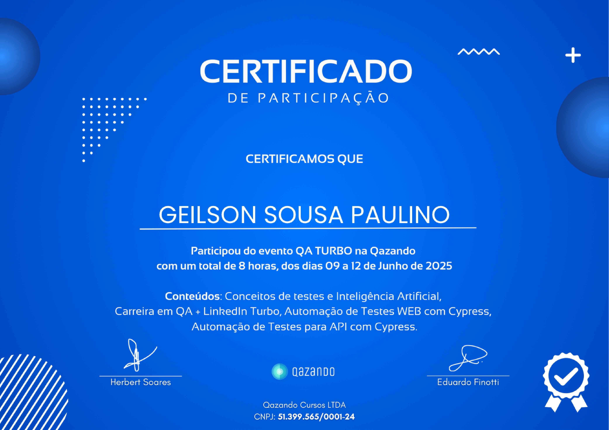
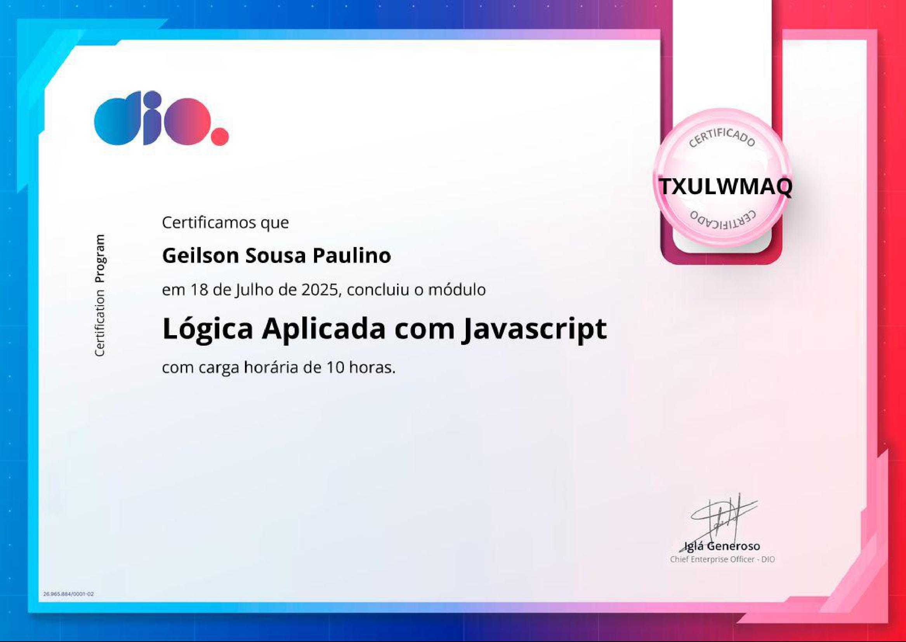
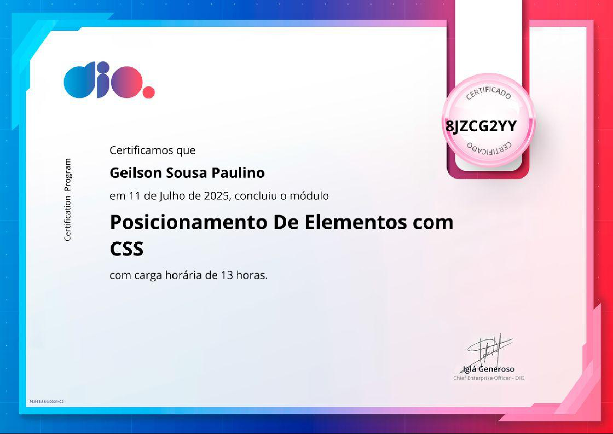
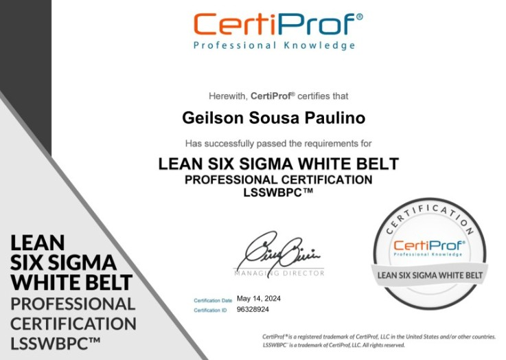
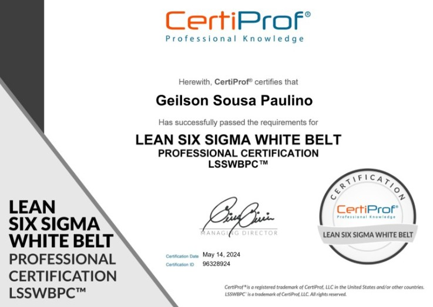
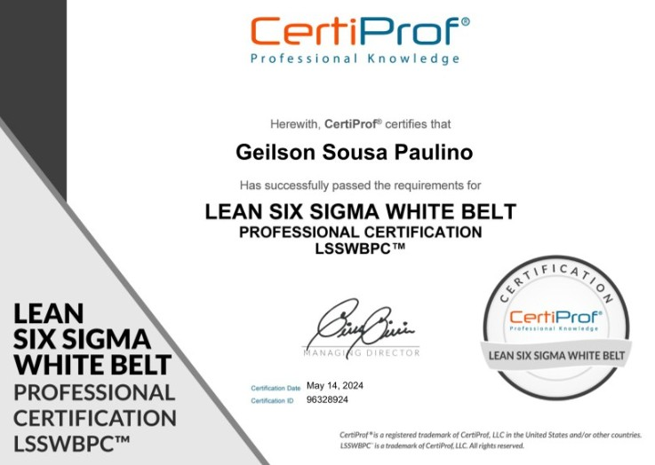
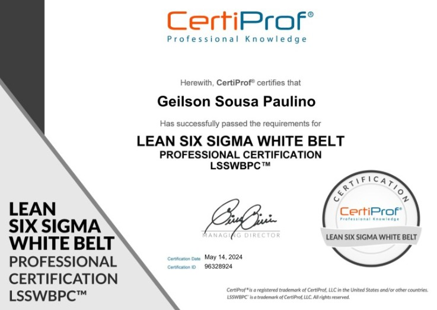

Certificados



 


Testes Manuais/Automatizados, JavaScript, Postman, Cypress, CSS e Metodologias Ágeis
Sou de Fortaleza-CE e tenho experiência prática com Qualidade de Software, atuando com foco em testes manuais e automatizados. Meu principal objetivo como QA é garantir que produtos digitais sejam entregues com estabilidade, usabilidade e confiança ao usuário final. Tenho vivência em todo o processo de testes — desde o entendimento dos requisitos até a execução, documentação, e reporte de bugs com clareza e objetividade. Gosto de analisar cenários reais de uso, antecipar falhas e colaborar com times de desenvolvimento para entregar software de alta qualidade.
Minhas principais habilidades incluem:
Projeto desenvolvido como desafio prático para treinar habilidades em HTML5 e CSS3, com foco em layout, responsividade e uso de Flexbox. Reproduzi a estrutura visual da página inicial do YouTube, incluindo o cabeçalho, barra lateral, thumbnails de vídeos e navegação, tudo com código limpo e sem frameworks. O objetivo foi aprimorar minha capacidade de replicar interfaces reais com fidelidade visual e boas práticas de semântica e acessibilidade.
Ver Código
